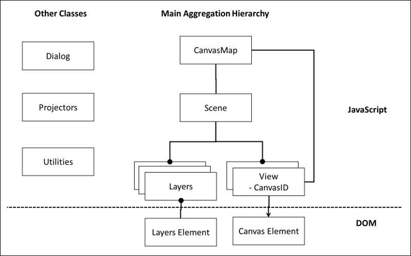

Reference Material
Below is reference material on how CanvasMap was designed and more technical details.
Design
Overall Design
As you've already seen, CanvasMap relies upon an HTML page that includes:
- Includes for JavaScript files containing the CanvasMap code
- CSS file(s) for CanvasMap styleing
- "DIV" elements in the HTML for the CanvasMap(s)
The CSS file "CanvasMap.css" contains the style information for all of CanvasMap and the styles are named based on the names of the elements in CanvasMap (see below for a full list of the elements). The JavaScript files are the bulk of the CanvasMap code and are described below.
JavaScript Classes
CanvasMap has been implemented with JavaScript object-oreinted design. This makes the design very flexible and makes it very easy for you to change and extend it's capabilities. Before proceeding, it is recommended that you have some knowledge of object-oreinted programming.
The figure below shows how CanvasMap was designed. All the JavaScript objects are contained within an overall CanvasMap object. This is the primary object to use. The CanvasMap object then contains a "Scene" which contains "Layers". The Scene can be thought of as a scene or area on the ground and is the same as a Scene in BlueSpray or a "Data Frame" in ArcGIS. The layers contain the actual spatial data. There can be a huge variety of types of layers and you are welcome to create your own. The layers are linked to their entries in the "Layer List" called "Layers Element". The Scene also contains the "Views" that the Scene appears in. The Views are linked to the HTML Canvas element that they will draw into. There are also a variety of support classes for putting up JavaScript "Dialog Boxes", projecting data, and other utility functions.

Mouse Events
The main mouse events (mouse down, mouse up, mouse move) are overriden in CanvasMap which then calls the view, which calls the Scene, which then calls the layers:
- CanvasMap overrides the mouse events with MouseDown, MouseUp, and MouseMove functions.
- If the event is not used by CanvasMap (i.e. the user is not dragging the contents of the map) then the View's mouse event function of the same name is called.
- The View converts the coordinates of the mouse cursor to reference units (map units) and then call's the Scene's mouse event function of the same name with this coordinate.
- The Scene calls all the layers mouse event function until one of the layers returns value of "true" for "Used" (i.e. the layer has used the mouse event and other layers should not use it).
- The layers typically check if the mouse event was inside one of their features. If so, the layer takes apprpriate action like putting up an information window and returns "true" to keep other layers from using the event. Otherwise, the layer returns "false".
The Design Details page contains additional information on the design.
Class Reference
Below is a reference for each of the classes in CanvasMap. This includes the "public" functions within each of the classes. There are other functions that you can call but be warned that they may not be supported in the future. All classes in CanvasMap, except CanvasMap itself, are prefixed with "CM" to avoid name collision with other libraries.
CanvasMap
CanvasMap is the main class for the library and integrates together a MapHeader, ToolContainer, CanvasContainer, MapFooter, and a LayerList.
Elements in a CanvasMap
- CanvasMap - main object for each map on a page
- TheScene - contains the layers
- TheLayers
- TheView - the veiw for the scene
- Elements - the other visible elements (divs) in the canvas map
- TheScene - contains the layers
Index Definitions
Below are definitions for accessing the elements in CanvasMap
Note: Indexes are used to speed up access to the elements instead of using "getElementByID()" because getElementByID() can take quite a bit of time when used on complex web pages.
| CanvasMap.MAP_CONTAINER | Overall container for the entire CanvasMap |
| CanvasMap.MAP_HEADER | Contains the map title |
| CanvasMap.TOOL_CONTAINER | Contains the "ToolTitle" and tools |
| CanvasMap.TOOL_ADD | A tool to add new data to the map |
| CanvasMap.TOOL_EDIT | A tool to edit existing data |
| CanvasMap.TOOL_INFO | A tool to provide information on data in the map (an "i" or arrow) |
| CanvasMap.TOOL_PAN | A tool to pan the map (the hand) |
| CanvasMap.CANVAS_CONTAINER | The DIV tag that surrounds the main canvas that displays the map data |
| CanvasMap.CANVAS | The canvas element that displays the map data |
| CanvasMap.LAYER_LIST | The list of layers that are available for the map |
| CanvasMap.BACKGROUND_LIST | Contains the list of available backgrounds |
| CanvasMap.SEARCH_PANEL | The panel to perform text searches on attributes |
| CanvasMap.TAB_CONTAINER | The DIV element that contains the tabs above the Layer List, Background List, and Search Panel |
| CanvasMap.MAP_FOOTER | The footer at the bottom of the map that can show the SR, coordinate, and other information |
| CanvasMap.MAP_COORDINATES | The current coordinate under the mouse cursor |
| CanvasMap.MAP_SRS | Contains the spatial reference system for the map |
| CanvasMap.MAP_CREDITS | Contains the credits for the map (user set) |
| CanvasMap.NAVIGATION | The navigation controls (zoom in, zoom out, zoom to all) |
| CanvasMap.TOOLS_TITLE | The title in front of the tools. |
Coordinate Unit Defintions
The following definitions are used to specify the units for coordinates that are displayed in the footer and in scale bars. Note that conversions to coordinates that are in a different spatial reference than the map can only be done if a projector is provided.
- CanvasMap.COORDINATES_UNITS_DD
- CanvasMap.COORDINATES_UNITS_DMS
- CanvasMap.COORDINATES_UNITS_METERS
- CanvasMap.COORDINATES_UNITS_FEET
Functions
Below is a description of each of the functions available in CanvasMap.
| Function | Description |
|---|---|
| Constructors | |
| CanvasMap() | Creates a new canvas map object |
| Overriden before Initialize() | These functions could be overriden before Initialize() is called (but rarely would be) |
| MouseWheel() | |
| ClickOnTool(NewTool) | |
| Called before Initialize() | These functions should be called to set parameters before Initialize() is called. |
| SetImageFolder(PathToImages) | Sets the path to the images folder if it has changed. |
| SetCoordinateUnits(NewUnits) | Sets the coordinate units displayed in the footer |
| SetElement(ElementIndex,NewElement) | Change the element before it is added to CanvasMap |
| GetElement(ElementIndex) | |
| SetExistingElements(Flag) | True to use existing elements in the DOM rather than have CanvasMap create the elements |
| SetResizeFlag(ResizeFlag) | Set this to false if you do not want a particular element to be resized. |
| SetSupportsResize(Flag) | Set this to false if you do not want CanvasMap to resize the map in the StartMap() function call. |
| SetMapRightOffset(NewOffset) | For resizable maps, distance from the right side of the map to the right side of the page |
| SetMapBottomOffset(NewOffset) | For resizable maps, distance from the bottom of the map to the bottom of the page |
| SetHorizontalMargin(NewMargin) | Distance between the map and the layer list for resizeable maps |
| Function to Initialize the CanvasMap | |
| Initialize([MouseEvents]) | This function puts together the elements set above. The MouseEvents parameter is optional and will turn off mouse event processing (i.e. makes the map static) if true |
| Called After Initialize() and before StartMap() | |
| AddLayer(TheLayer) | Adds a new layer to the map |
| AddBackground(TheLayer) | Adds a new background layer to the map |
| GetScene() | Returns the scene object for the map |
| GetView() | Returns the view object for the map |
| SetProjector(TheProjector) | Sets the projector if the "ScenePosition" information should include geographic coordinates |
| SetMaxBounds(TheBounds) | Sets the maximum reference bounds for the map. |
| SetZoomRange(Min,Max) | Limits the zoom levels to be between Min and Max. |
| SelectTool(TheTool) | Sets the initial tool for the map to display (see CMView for definitions) |
| SetCurrentTab(TabIndex) | Set the tab that is selected (0 is typically layers, 1 for background, etc.) |
| AddRightSticky(TheElement,MoveFlag,Offset) | Makes an element "sticky" to the right side of the page (i.e. the width will resize) |
| AddBottomSticky(TheElement,MoveFlag,Offset) | Makes an element "sticky" to the bottom of the page (i.e. the height will resize) |
| Function to start the map running | |
| StartMap(ResizeFlag) | Starts the map displaying and interacting with the user. Resize should be true to create a resizable map. |
| Called after the map is started | |
| Paint() | Repaints the map (does not typically need to be called from outsize CanvasMap) |
| ZoomIn() | Zooms the map in by a factor of 2 |
| ZoomOut() | Zooms the map out by a factor of 2 |
| ZoomToMax() | Zoom to the maximum bounds set with SetMaxBounds() |
| ZoomToBounds(TheBounds) | Zooms the map to the specified bounds |
| ZoomTo(NewLevel) | Zooms to the specied zoom level |
| SetRefCenter(RefX,RefY) | Positions the map with RefX,RefY in the center. |
| Resize(ParentElement) | If you implement your own resize handler, call this function to resize the map |
| Static Functions (called after start) | |
| SetPopupWindow(NewWindow) | Registers a popup window right before it is made visible so it can be closed on mouse clicks |
| HidePopupWindow(NewWindow) | Hides any active windows (this does not typically need to be called) |
CMLayer
Layers display spatial data. Each layer is a little different but they call use the functions described here.
Mark Types
The following definitions are used to change the type of mark that is displayed for points. CIRCLE is the default and you can specify an IconImage instead of these marks.
- CMLayer.MARK_CIRCLE - MARK_SIZE specifies the diameter of the circle
- CMLayer.MARK_TRIANGLE - MARK_SIZE is the width of the triangle
- CMLayer.MARK_SQUARE - MARK_SIZE is the width and height of the square
- CMLayer.MARK_STAR - MARK_SIZE is the width of a five pointed star
Icon Images
An icon image can replace a mark for point layers. The image will be displayed at it's full resolution and they should be relatively small for layers with lots of points. For an ICON_IMAGE, an object is provided with the following format:
{
TheImage:Image Object,
OffsetX:OffsetX,
OffsetY:OffsetY
};
Optional Property Defintions
The following properties can be set for any layer but whether they are implemented or not may depend on the layer type. All of these properties can be set for the entire layer and some can be set for individual features as well.
| Property | Description | Individual Features |
|---|---|---|
| CMLayer.INFO_ATTRIBUTE | The attribute to use for HTML to be placed in an information window | |
| CMLayer.FEATURE_STYLE | Style to use to paint features | Yes |
| CMLayer.MOUSE_OVER_STYLE | Style to use when the user moves the mouse over a feature | Yes |
| CMLayer.SELECTED_STYLE | Style to to paint a feature when it is selected | Yes |
| CMLayer.ICON_IMAGE | Image to replace the mark for a point | (not implemened yet) |
| CMLayer.MARK_TYPE | Type of mark to display for points | (not implemened yet) |
| CMLayer.MARK_SIZE | Size of marks in pixels | (not implemened yet) |
| CMLayer.ZOOM_RANGE | Sets the zoom range for a layer to be displayed at. Value is an array formated at [MinZoomLevel,MaxZoomLevel] |
Below are the functions available for all layers. Not all layers may implement all functions.
| Function | Description |
|---|---|
| Get and Set Calls | |
| SetName(Name) | set the name of the layer as it appears in the layer list |
| GetName() | Returns the name of the layer |
| SetVisible(VisibleFlag) | make the layer visible (VisibleFlag=true) or not (VisibleFlag=false) |
| IsVisible() | Returns true if the VisibleFlag is set and the layer is within any optional zoom level ranges. |
| SetHTMLAttribute(HTMLAttribute) | Heading for the attribute with HTML to display as information for a feature |
| GetHTMLAttribute() | Returns the HTML attribute |
| SetScene(NewScene) | Set the scene the layer is in (only called by CanvasMap) |
| GetScene() | |
| SetStyle(NewStyle) | Set the style for the layer. This style will be used when the layer is being painted. |
| GetStyle() | Return the current tyles |
| SetBounds(NewBounds) | Set the bounds for the layer. This is typically only called by subclasses |
| SetInfoWindowWidth(newWidth) | Set the width to use for the layer's info window |
| GetInfoWindowWidth() | |
| SetProperty(TheProperty,Value) | Set a property value for all the features in a layer. |
| SetFeatureProperty(TheProperty,FeatureIndex,Value) | Set a feature-specific property |
| SetFeatureProperties(TheProperty,FeatureProperties) | Set all the feature properties at one time as an array. |
| SetIconImage(TheURL,OffsetX,OffsetY) | Makes it easy to set the ICON_IMAGE property |
| Functions to Override | |
| GetIconImage() | Returns an image to paint as the layer's icon in the legend |
| HasSettingsDialog() | Override to return true if the layer uses the default settings dialog or provides its own |
| ShowSettingsDialog() | Displays a settings dialog. The default dialog is displayed if the subclass does not override this function |
| SetURL() | Subclasses will typically override this function to implement the data transfer from the server to the client. |
| Overrides for attribute tables | |
| GetNumAttributeRows() | Return the number of rows of attributes (should match the number of features) |
| GetNumAttributeColumns() | Return the number of columns in the attributes |
| GetAttributeHeading(Index) | Return the heading for a specified column |
| GetAttributeCell(ColumnIndex,RowIndex) | Return the value in a particular cell in the attribute table. |
| SetSelectedFeature(Index) | |
| UnselectAll() | |
| Overrides for optimizing caching of data | These are more advanced features for layers that manage a cache as the view changes |
| ZoomLevelChanged(TheView) | Called when the zoom level chagnes |
| ViewMoved(TheView) | Called when the view bounds change |
| Mouse Event Handling | |
| In(TheView,RefX,RefY) | |
| MouseDown(TheView,RefX,RefY) | respond to a "mouseDown()" event within the scene. Return true if the layer used the event and other layers should not. |
| MouseMove(TheView,RefX,RefY) | |
| MouseUp(TheView,RefX,RefY) | |
| Painting | |
| Paint(TheView) | |
| Resize(TheView) | |
| PaintSelected(TheView) | |
| GetSearchResults(SearchPhrase,ResultsPanel) | |
CMScene
It is rare that you'll need to call any of these functions because most are replicated at the CanvsMap level.
| Function | Description |
| Functions to call | |
| LayerIndex=AddBackground(TheLayer) | Adds a background to the background layer list |
| SetSelectedBackgroundIndex(Index) | Sets the background that is selected and displayed |
| LayerIndex=AddLayer(TheLayer) | |
| TheLayer=GetLayer(Index) | |
| LayerIndex=GetLayerIndex(TheLayer) | returns the current index for the specified layer |
| MoveLayerUp(Index) | |
| MoveLayerDown(Index) | |
| DeleteLayer(Index) | |
| MoveLayer(TheLayer,NewIndex) | move the specified layer to the location specified. |
| SetAttributeTableElement(NewAttributeTableElement) | Sets the DOM element for the display of the attribute table |
| UnselectAll() | |
| Tyipcally only called by CanvaMap | |
| AddView(TheView) | |
| GetSearchResults(TheText,SearchResults) | |
| ZoomLevelChanged() | |
| ViewMoved(TheView) | |
| Event Handling, called by CanvasMap | |
| In=function(TheView,RefX,RefY) | |
| MouseDown(TheView,RefX,RefY) | |
| MouseMove(TheView,RefX,RefY) | |
| MouseUp(TheView,RefX,RefY) | |
| Resize=function(TheView) | |
| Paint=function(TheView) | |
| Repaint=function() | |
| LayerSettingsChanged=function(TheLayer) | |
| AddLayerList(TheElement) | Add the list of layers (with supported events) to the specified element |
| AddBackgroundList(TheElement) |
CMView
Typically, only the CanvasMap code will call the view. This is for those wishing to create their own layer types.
Below are the currently defined tools:
- TOOL_HAND
- TOOL_INFO
- TOOL_EDIT
- TOOL_ADD
| Function | Description |
| Constructor | |
| CMView() | Tyipcally called by CanvasMap |
| SetMinScale(MinScale) | Setse the minimum scale value used when the zoom is at 0. This is typically 1 for 1 meter = 1 pixel at ZoomLevel=0 |
| SetScene(CMScene) | Tyipcally called by CanvasMap |
| Setup(CanvasID) | Tyipcally called by CanvasMap |
| GetContext() | |
| GetScale() | Computes a scale value based on the zoom level and MinScale |
| GetExtent() | |
| MouseDown(TheEvent) | |
| MouseMove(TheEvent) | |
| MouseUp(TheEvent) | |
| MouseWheel(TheEvent) | |
| MouseUp(TheEvent) | |
| SetMaxBounds(MaxBounds) | |
| SetZoomRange(MinZoom,MaxZoom) | |
| SetRefCenter(RefX,RefY) | |
| GetRefCenter() | Object:RefX,RefY |
| ZoomToBounds(NewBounds) | |
| ZoomIn() | |
| ZoomOut() | |
| ZoomTo(ZoomLevel) | |
| ZoomToMaxBounds() | |
| SetTool(NewTool) | |
| GetTool() | |
| Pixel to Ref Coordinate Conversion | |
| GetPixelXFromRefX(RefX) | |
| GetPixelYFromRefY(RefY) | |
| GetPixelFromRef(RefX,RefY) | Returns an object with PixelX and PixelY |
| GetPixelWidthFromRefWidth(RefWidth) | |
| GetPixelHeightFromRefHeight(RefHeight) | |
| Ref Coordinate to Pixel Coordinate Conversion | |
| GetRefWidthFromPixelWidth(PixelWidth) | |
| GetRefHeightFromPixelHeight(PixelHeight) | |
| GetRefXFromPixelX(PixelX) | |
| GetRefYFromPixelY(PixelY) | |
| Paint Functions | |
| SetStyle(TheStyle) | Called to set the style for the painting |
| RestoreStyle() | Restores the style that was active before the last call to SetStyle() |
| Paint() | Paints the current contents of the scene into the view |
| Functions to convert from reference coordinates to pixel coordinates | |
| InDocumentPixel(PixelX,PixelY) | |
| InCanvasPixel(PixelX,PixelY) | |
| Paint based on pixel coordinates | |
| PaintImage=function(TheImage,PixelX,PixelY) | |
| Functions to paint items in reference coordinates | |
| PaintRefBounds(TheBounds) | |
| PaintRefCircle(X,Y,RadiusInPixels) | |
| PaintRefText(X,Y,Text) | |
| PaintRefLine(X1,Y1,X2,Y2) | |
| PaintRefRaster(TheImage,TheRefBounds) | |
| PaintRefImage(RefX,RefY,TheImage) | |
| PaintRefImageScaled(TheImage,RefX,RefY,RefWidth,RefHeight) | |
| PaintRefPoly2(Xs,Ys,Closed) | Paints from arrays and needs to be renamed |
| Painting functions that are compatible with GeoJSON objects | |
| PaintRefPolygon(TheCoordinates) | |
| PaintRefLineString(TheCoordinates) | |
| PaintRefGeometry(TheGeometry) | |
| CreateInfoWindow(ID,RefX,RefY,WindowWidth,WindowHeight,TheHTML) |